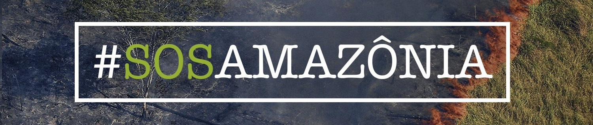
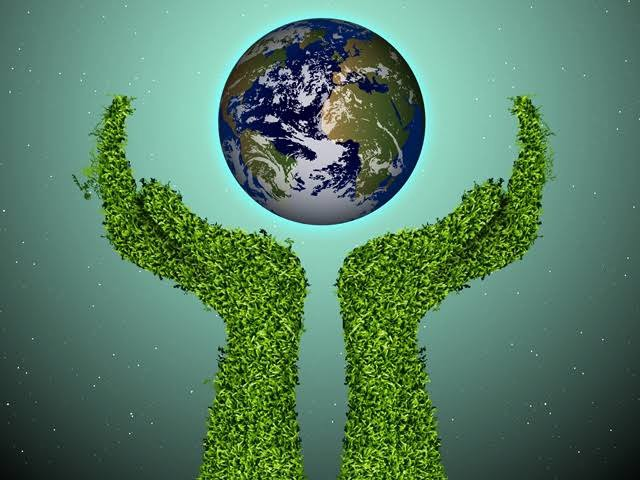

O cuidado com o desmatamento
Publicado em 11/06/2021, Por Assessoria de Imprensa

O desmatamento pode causar diversos impactos para o meio ambiente, afetando, assim, todos os seres vivos. Dentre os impactos que surgem como consequência do desmatamento, podemos citar a degradação de habitat: a retirada da vegetação destrói o habitat de várias espécies, o que pode, inclusive, levá-las à extinção. Mais >>>
A importância de cuidar do meio ambiente
Publicado em 06/06/2019, Por Assessoria de Imprensa

Muito se fala, atualmente, em preservar e cuidar do meio ambiente. No entanto, muitas vezes as razões dessa necessidade não são ditas, ou não são percebidas. Afinal, o que é meio ambiente e por que devemos cuidar dele? Mais >>>
Educação ambiental: preparando crianças para desafios do futuro
Publicado em 25/08/2021, Por Assessoria de Imprensa

Garantir o amanhã é repensar as ações de hoje; segundo especialistas, não é mais possível desconectar infância, meio ambiente e futuro. Mais >>>
Educação ambiental: preparando crianças para desafios do futuro
Publicado em 25/08/2021, Por Assessoria de Imprensa

É um programa criado e gerido pela Secretaria do Meio Ambiente e Infraestrutura- SEMA/BA- para coordenar e implementar as ações e atividades de voluntariado relacionadas à conservação ambiental no âmbito do estado da Bahia. Mais >>>